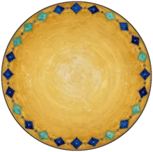
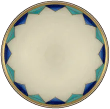
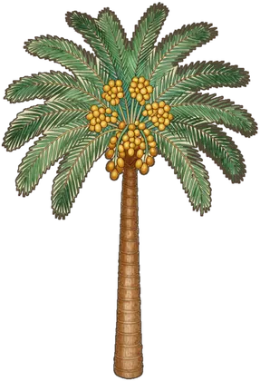

A note for parentsIt was a bow of respect, allowed in their time. In Islam we prostrate only to Allah.
He said to them:
لَا تَثْرِيبَ عَلَيْكُمُ الْيَوْمَ ۖ يَغْفِرُ اللَّهُ لَكُمْ ۖ وَهُوَ أَرْحَمُ الرَّاحِمِينَ
"No blame upon you today. May Allah forgive you; He is the Most Merciful of the merciful." (Surah Yusuf 12:92)
Your turn
Parent pause
Stop for a moment and ask together:
Patience, then forgiveness
Prophet Yusuf thanked Allah for all His blessings, and then he made this dua. We can make it too!
أَنْتَ وَلِيِّي فِي الدُّنْيَا وَالْآخِرَةِ ۖ تَوَفَّنِي مُسْلِمًا وَأَلْحِقْنِي بِالصَّالِحِينَ
"You are my Protector in this world and the Hereafter. Take my soul as a Muslim, and join me with the righteous." (Surah Yusuf 12:101)